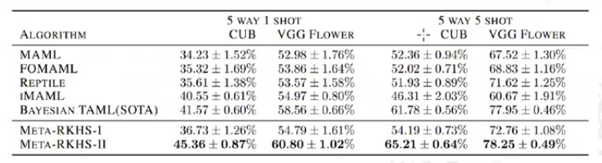

Highlights from ICLR 2021 conference
Papers
MELR: Meta-Learning via Modeling Episode-Level Relationships for Few-Shot Learning
Nanyi Fei, Zhiwu Lu, Tao Xiang, Songfang Huang
This work proposes Modeling Episode-Level Relationship (MELR) which changes the way that tasks are sampled during meta-training and uses Cross-Episode Attention Module (CEAM) and Consistency Regularization (CECR) to improve performance. Task-Sampling. trains models by deliberately sampling two tasks per learning iteration, instead of one like in standard episodic meta-training. The query and support sets for the two tasks share the same classes but contain different instances. Cross-Episode Attention Module (CEAM) is an attention module over the support sets. Cross-Episode Consistency Regularization (CECR) encorages the model to produce similar prototypes across the two episodes.
MetaNorm: Learning to Normalize Few-Shot Batches Across Domains
Yingjun Du, Xiantong Zhen, Ling Shao, Cees G. M. Snoek
This work proposes an alternative to BatchNorm, TaskNorm, Transductive Batch Norm and others. Meta-Norm is a non-trasductive method which learns the Batch Norm statistics via meta-learning.
Meta-Learning with Neural Tangent Kernels
Yufan Zhou, Zhenyi Wang, Jiayi Xian, Changyou Chen, Jinhui Xu
This work proposes two new methods offering SOTA performance, including on OoD tasks, and robustness against adveserial attacks. Their Meta-RKHS-I algorithm uses two terms: 1) encouraging the models to perform well without adaptation, and 2) encouraging the model to perform large fine-tuning steps to perform fast adaptation. The algorithm is closely related to MAML. Meta-RKHS-II is a closed-form adapation algorithm. The two algorithms are related to each other and their difference between objectives can be bounded.
Meta-Learning Symmetries by Reparameterization
Allan Zhou, Tom Knowles, Chelsea Finn
This work proposes Meta-Learning Symmetries by Reparameterization (MSR) which meta-learns equivarient structure to exploit symmartries in the task distribution. (Note: equivarience = varience to the same degree, meaning transformation in the input result in symetric transformations in the output). Conv layers are translation equivarient but are not equivarient natively with rotations, reflections, and scalings. As a result, networks need to be trained through data augmentations, or employ specialized equivariant layers / achitectures. This work proposed MSR, which enforces weight sharing patterns. In the inner loop they only update $v$, keeping $U$ fixed. In the outer-loop they learn equivariance $U$ that learns symetries in the task distributions. MSR is able to learn 2D rotation equivarience, and perform better in augmented FSL tasks (where the query set is the augmented version of the support set).
Attentional Constellation Nets for Few-Shot Learning
Weijian Xu, Yifan Xu, Huaijin Wang, Zhuowen Tu
Traditional Constellation Model (TCM) extracts key point of interests from an image and uses k-Means clustering to construct a bag-of-visual words. This is then encoded into a shape and modeled by a Gaussian Distribution. This work integrates constellation model into the convolutional neutal networks, which enables the model to discover new visual-words and their relationship. Their constilation modules are inserted after each conv layer, and have two parts: Cell Feature Clustering (CFC, mimics the clustering step in TCM) and Cell Rotation Modelling (CRM, which replaces the shape modelling part in TCM). CRM uses a lot of attention.
Meta Back-Translation
Hieu Pham, Xinyi Wang, Yiming Yang, Graham Neubig
Use meta-training to do multi-lingual translation.

Meta-learning with Negative Learning Rates
Alberto Bernacchia
This work shows that setting a negative learning rate in the inner loop of MAML leads to bettwe performance on linear and non-linear regression tasks.
Contrastive Learning with Hard Negative Samples
Joshua Robinson, Ching-Yao Chuang, Suvrit Sra, Stefanie Jegelka
The idea in contrastive learning is to sample positive and negative pairs of images with respect to some anchor image, and optimize the feature extractor / classifier by driving the feature representations of negative-anchor pairs away from each other, while driving the feature representations of positive-anchor pairs closer together. The pairs are commonly sampled uniformily at random. The papar points out this that this is redundent in situations where the feature extractor has already learned to appropiately drive the representations closer/futher away for positive/negative pairs. This provides little useful gradient signal since the problem is already effectily solved for those samples. In this work, the authors propose a way for the model to focus on the "hard" negative samples which the model is currently wrong on. The hardness is solved by the inner dot product (cosine distance) such that closer the points are to the anchor point the more frequently they appear. The strength of 'hardness' is scaled by the parameter $\beta$ and is also conditions on class labels (approximated by the Positive Unlabelled learning) since some classes are supposed to appear closer to the anchor than others.
Contrastive Learning with Hard Negative Samples
Joshua Robinson, Ching-Yao Chuang, Suvrit Sra, Stefanie Jegelka
BatchNorm Learns sparse representations.
Few-Shot Learning via Learning the Representation, Provably
Simon Shaolei Du, Wei Hu, Sham M. Kakade, Jason D. Lee, Qi Lei
Bayesian Few-Shot Classification with One-vs-Each Pólya-Gamma Augmented Gaussian Processes
Jake Snell, Richard Zemel
Few-Shot Bayesian Optimization with Deep Kernel Surrogates
Martin Wistuba, Josif Grabocka
Dataset Meta-Learning from Kernel Ridge-Regression
Timothy Nguyen, Zhourong Chen, Jaehoon Lee